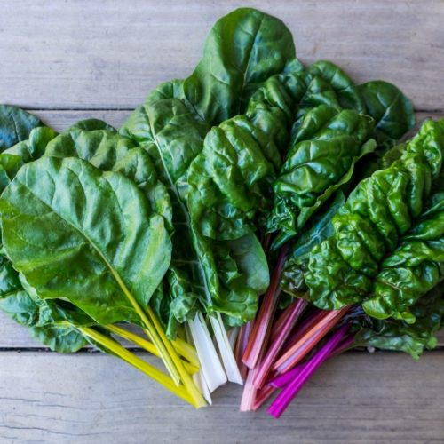
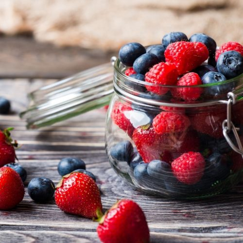
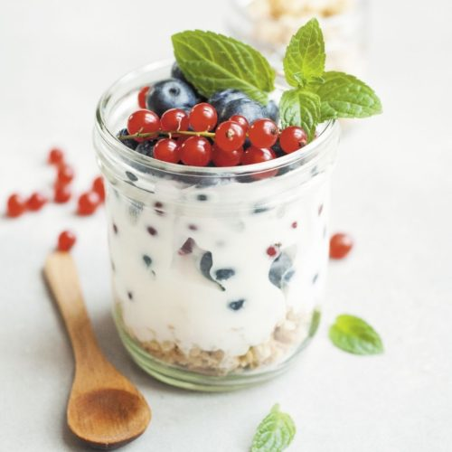
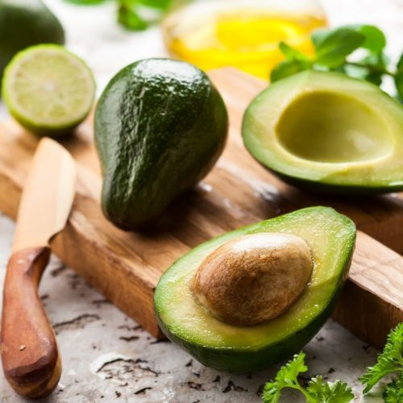

Super Food
Abstract
A qualitative research project was conducted to examine
the meanings of foods within adolescent female
culture by looking at ways in which young women classify and use foods.
Ninety-three young women ages 11 to 18 participated in semi-structured
individual interviews or small group discussions in which they talked about what,
where, and with whom they ate. The main food classification scheme that
emerged from the data analysis was the dichotomization of foods into two
groups: “healthy foods” and “junk foods”. The study participants
agreed on the core foods and common characteristics of foods in each group. They
Résumé
| Food | Type |
|---|---|
| Less Ripe | Lime, Gooseberry |
| Medium | Green apple, Citrus, Passion fruit |
| More Ripe | Grapefruit, Peach, Melon |
| Oaked | Vanilla, Smoke |
| Vermentino | More floral and citrus |
| Gruner Veltiner | More lime, lemon, and grapfruit |
| Verdejo | More texture and peach |
super food

Dark Leafy Vegetables
excellent source of nutrients: folate, zinc, calcium, iron, magnesium, vitamin c, and fiber

Berries
loaded with vitamins minerals, fiber, and antioxidants.

Kefir (and Yogurt)
contains protein, calcium, B vitamins, potassium, and probiotics

Avocado
Rich in fiber, vitamins, minerals, healthy fats, high in monounsaturated fats